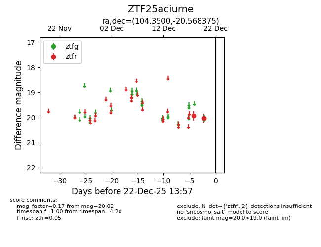
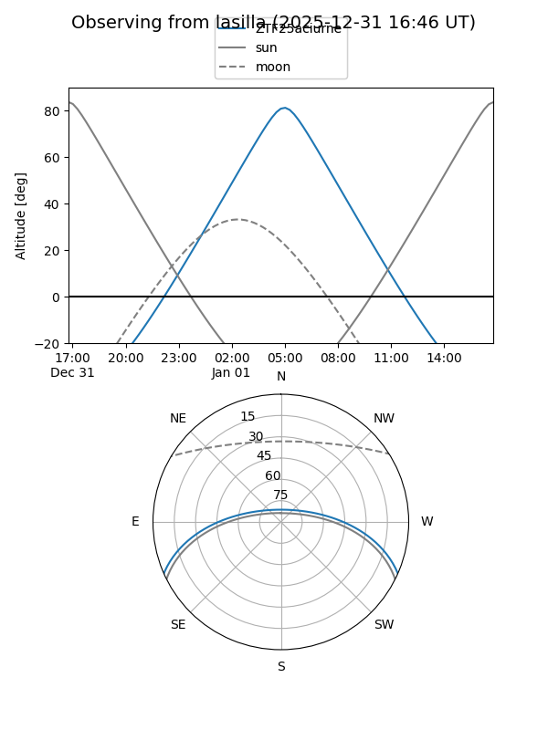
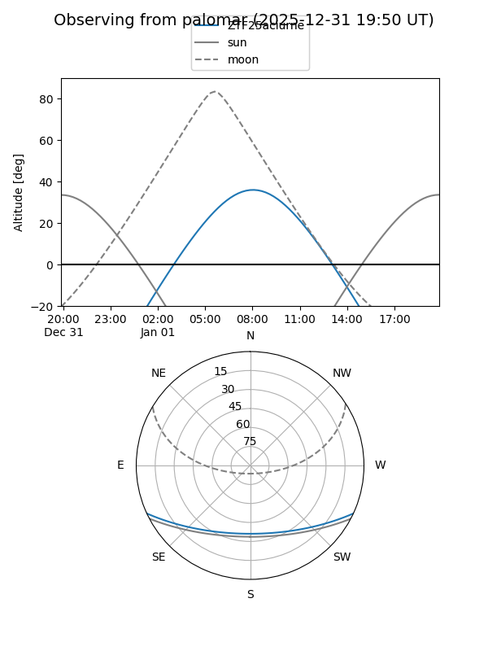

ZTF25aciurne
Target ZTF25aciurne at 2026-01-09 12:49
Aliases and brokers:
FINK: link
Lasair: link
ALeRCE: link
alt names
ZTF25aciurne (ztf,fink_ztf)
Coordinates:
equatorial (ra, dec) = 104.3500,-20.56838
equatorial (HMS+DMS) = 06:57:23.99,-20:34:06.15
galactic (l, b) = (232.0146,-7.96249)
Flags:
Photometry:
last ztfr=20.02
2 ztfr detections
Lightcurve

Visibility


Additional plots